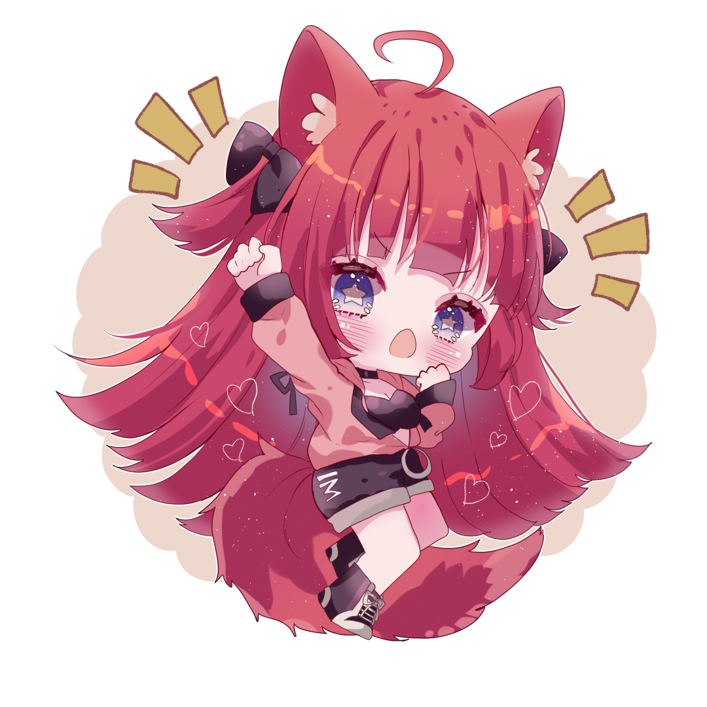
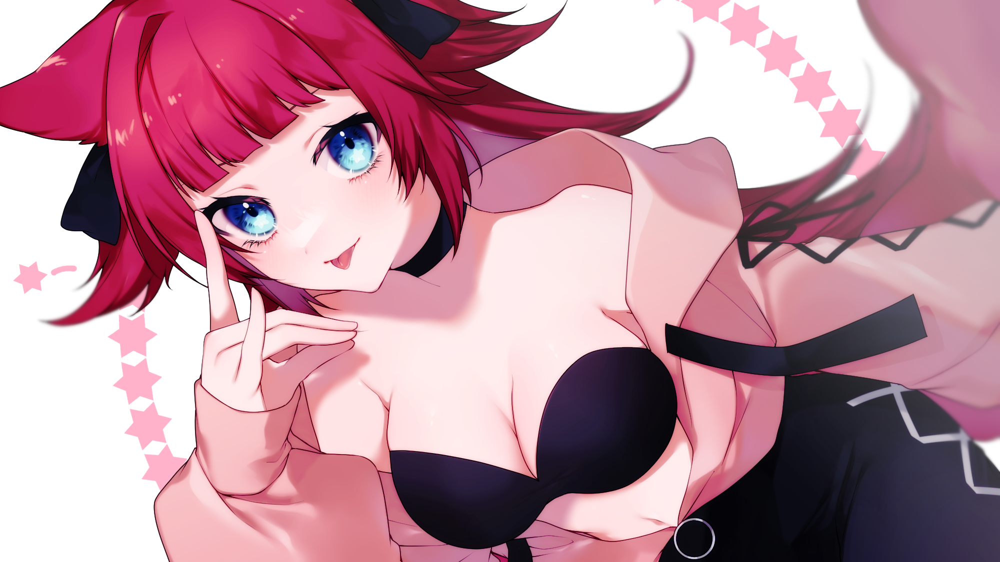

オフィシャルサイトをリニューアルしました。
牛タン紅狐の活動情報を、もっと見やすく楽しくチェックできるサイトになりました。

01 / PROFILE
楽しい時間を、配信や動画を通してみんなにお届けします。

02 / NEWS
牛タン紅狐の活動情報を、もっと見やすく楽しくチェックできるサイトになりました。
03 / MOVIE
最新の配信やカバーソングは
YouTubeでチェックしてね。
04 / GOODS
ORIGINAL GOODS
NEW ITEM
INFORMATION
05 / CONNECT
配信のお知らせや日々の活動はSNSから。
お仕事のご相談もXのDMよりご連絡ください。